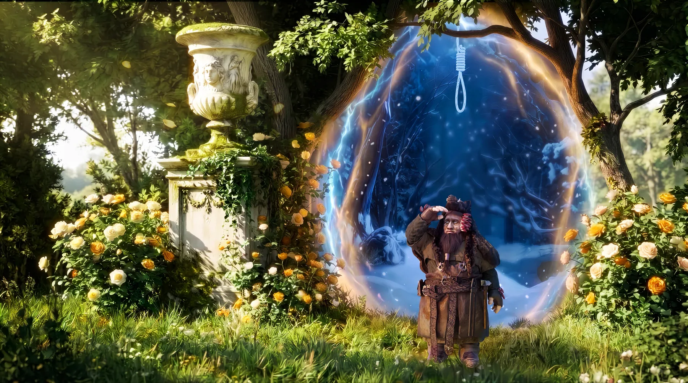
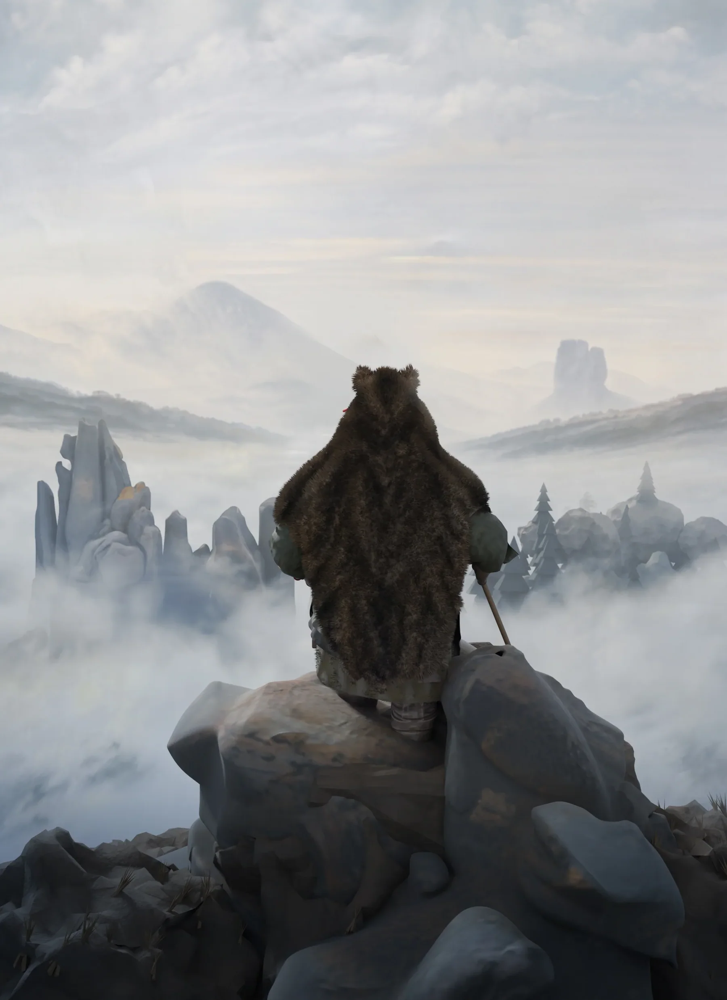

Một tiểu thuyết giả tưởng phương Bắc, minh hoạ hoàn toàn bằng 3D. 10 chương đầu đã có thể đọc trực tuyến.
Ngươi thật sự muốn kết thúc ở đây sao?
Bắt đầu đọc
Chương 1
Khu Vườn Thường XanhThe Evergreen Garden
19 phút

Chương 2 Thung Lũng Vọng ÂmThe Valley of Echoes 33 phút Chương 3
Khoảng Trời Dưới SâuA Patch of Sky Below
23 phút
Chương 3
Khoảng Trời Dưới SâuA Patch of Sky Below
23 phút
 Chương 4
Trưa Hè Thong DongA Leisurely Summer Noon
32 phút
Chương 4
Trưa Hè Thong DongA Leisurely Summer Noon
32 phút
 Chương 5
Vòm Trời Khói TrắngThe White Veil Above
76 phút
Chương 5
Vòm Trời Khói TrắngThe White Veil Above
76 phút
 Chương 6
Mùa Đông Ửng HồngWinter’s Blush
55 phút
Chương 6
Mùa Đông Ửng HồngWinter’s Blush
55 phút

Chương 7 Khúc Hát Ru Của Đại DươngThe Ocean’s Lullaby 67 phút Chương 8 Sợi Tơ Đáy VựcThe Silk Strand 94 phút Chương 9 Đóa Hoa Thép Trên Đe LạnhThe Steel Flower on the Cold Anvil 67 phút